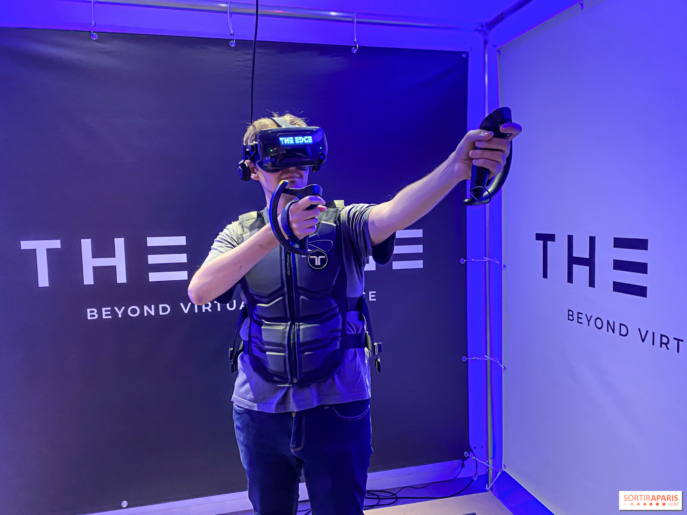

INFORMACION
ORIGEN
---------------------------------------------------------------------------------------------------------------------------------------------------
¿Cómo surge la interacción humano computadora? Los orígenes de la Interacción Humano-Computadora (IHC) pueden remontarse a la época de la posguerra, cuando Vannevar Bush introduce en el artículo As we may think1 muchos de los conceptos que han inspirado investigaciones y desarrollos tecnológicos en el área, tales como hipertextos e hipermedios, interfaces.
BASES
HCI es un campo basado en el diseño y la tecnología informática, donde sus investigadores tratan de observar la forma en la que los humanos interactúan con los ordenadores para poder diseñar tecnologías que permitan interactuar de una forma más humana y novedosa.
HISTORIA
1945
El hipertexto es una herramienta con estructura secuencial que permite crear, agregar, enlazar y compartir información de diversas fuentes por medio de enlaces asociativos. La forma más habitual de hipertexto en informática es la de hipervínculos o referencias cruzadas automáticas que van a otros documentos (lexías).
1945-1955
SISTEMAS OPERATIVOS
Los primeros sistemas operativos datan de 1945-1955. El trabajo en los sistemas operativos desarrolló técnicas para las interfaces de los dispositivos de E/S, técnicas para el tunning del tiempo de respuesta del sistema frente al tiempo de interacción humana, técnicas de multiproceso y técnicas para soportar entornos Windows y de animación.
1952
PRIMER SISTEMA DE RECONOCIMIENTO DE VOZ
En 1952 el primer sistema de reconocimiento de voz, la maquina de Audrey, sólo entendía dígitos y sólo una voz. 10 años más tarde, en la feria mundial, IBM presenta la máquina Shoebox el cual podía entender 16 palabras en inglés.
1960
EL RATON
El ratón o mouse (en inglés)es un dispositivo apuntador utilizado para facilitar el manejo de un entorno gráfico en una computadora. Generalmente está fabricado en plástico, y se utiliza con una de las manos. Fue diseñado por Douglas Engelbart y Bill English durante los años 1960 en el Stanford Research Institute, un laboratorio de la Universidad Stanford, en pleno Silicon Valley en California. Más tarde fue mejorado en los laboratorios de Palo Alto de la compañía Xerox (conocidos como Xerox PARC). Con su aparición, logró también dar el paso definitivo a la aparición de los primeros entornos o interfaces gráficas de usuario.
1965
RATON(NLS)
El primer ratón se desarrolló en los laboratorios SRI, como parte del proyecto NLS (financiado por ARPA, NASA y Rome ADC), como sustituto económico de los lápices ópticos.
HIPERTEXTO(TED NELSON)
En 1963 Ted inventó los términos de hipertexto e hipermedia para referirse a escritos no secuenciales, que coordinaran la presentación de cualquier tipo de información, texto e imágenes, que fue acuñado en 1965.
PRIMERA PANTALLA TACTIL
Se menciona que E. A. Johnson fue el primero en desarrollar una pantalla táctil en 1965. Sin embargo, la tablet, capaz de captar un sólo toque a la vez, fue patentada en 1969 y se utilizó hasta 1995 para controlar el tráfico aéreo.
1971
INVENCION DEL CORREO ELECTRONICO
En un principio los correos electrónicos solo se pudieron enviar dentro de la arpanet.
PROGRAMA DE DIBUJO Y PINTURANational Film Board of Canada.
El film “Hunger” ganó muchos premios después de ser dibujado utilizando una tableta financiada por el National Film Board of Canada, en vez de un ratón
CREACION DE PANTALLA TACTIL RESISTIVA
Llegando a 1971, Samuel G. Hurst creó la pantalla táctil resistiva. Esa pantalla contaba con un sensor llamado “Elograph” en honor al nombre de la compañía Elographics, y fue producida en masa hasta la década de los 80s.
1978
PRIMERA HOJA DE CALCULO
Se llamaba VisiCalc y fue desarrollada para el Apple II. La solución fue basada en un algoritmo de backtracking (dependency-directed backtracking) diseñado por SUSSMAN y STALLMAN en el MIT AI Lab.
---------------------------------------------------------------------------------------------------------------------------------------------------
